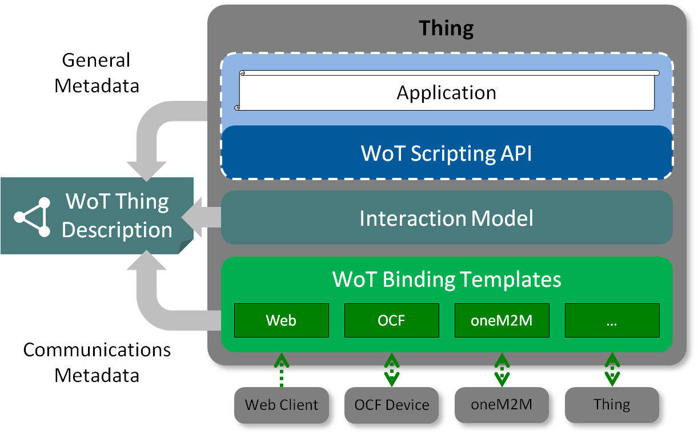

5-7: @tag #f2fmeeting https://github.com/w3ctag/meetings/tree/gh-pages/2018/04-tokyo hosted by @Keio_univ_PR in #Tokyo
April @w3c -- meetings, talks, workshop deadline, etc.:
https://www.w3.org/participate/eventscal.html

https://twitter.com/w3cdevs/status/98113558932291584117-18: in #Vienna, @specialprivacy holds its #W3Cworkshop on data #privacy controls and vocabularies https://www.w3.org/2018/vocabws/
https://twitter.com/w3cdevs/status/98113559380661862513: new deadline to participate in the #Web5G #W3CWorkshop https://www.w3.org/2017/11/web5g-workshop/#position-statements hosted by @GSMA #London
https://twitter.com/w3cdevs/status/9811355922925363209-12: @csswg #f2fmeeting https://wiki.csswg.org/planning/berlin-2018 hosted by @Monotype in #Berlin
https://twitter.com/w3cdevs/status/98113559086653849719-20: #WebPayment work @w3payments #f2fmeeting https://github.com/w3c/webpayments/wiki/FTF-April2018 in #Singapore
https://twitter.com/w3cdevs/status/98113559714535014418: @sabouzah presents #accessibility look into the future @FunkaNu #Stockholm
https://twitter.com/w3cdevs/status/98113559518661017623-27: @TheWebConf 2018 https://www2018.thewebconf.org/ #Lyon
https://twitter.com/w3cdevs/status/98113560045049036820-21: @restfest Midwest conference http://2018.restfest.org/midwest/ #GrandRapids
https://twitter.com/w3cdevs/status/981135598881837056Congrats to @kennethrohde, Web Platform architect @IntelSoftware for his election to the @tag üëè https://twitter.com/w3c/status/981155636569309184
This is the result of the election that was started a month ago https://twitter.com/w3cdevs/status/970750379108585472
https://twitter.com/w3cdevs/status/981159615013498880He is also contributing to #WebAssembly. See his intro to #WebAssembly presentation https://docs.google.com/presentation/d/12jZRC1mBDkgUtIyHYO0a7HNMmOqtoLstApCZwvN0GN8/edit at our @w3c developer meetup last November in #SanFrancisco https://www.w3.org/2017/11/Meetup/
https://twitter.com/w3cdevs/status/981159622454095872He was one of the recent speakers at http://Chapters.io on the topic of Generic Sensor API, exposing #IoT to #JavaScript https://www.meetup.com/Pittsburgh-Code-Supply/events/246610327/
https://twitter.com/w3cdevs/status/981159620797456384From exploration through incubation to formal standardization on the #WebPlatform, Kenneth is a true Web lover. Find out more about his intertwined story with the #Web: https://medium.com/@kennethrohde/w3c-tag-nomination-introducing-myself-4ee5791757bd
https://twitter.com/w3cdevs/status/981159624593367040A long list of meaty topics to fill the days of the @tag meeting in #Tokyo: packaging, lots of security and privacy related topics, lots of spec reviews. Follow @hadleybeeman to hear from it live! https://twitter.com/hadleybeeman/status/981689384390053889
https://twitter.com/w3cdevs/status/981815346268200960The Web of Things (WoT) Working Group develops models and vocabularies to bring interoperability to the #IoT https://www.w3.org/WoT/WG/ https://twitter.com/w3c/status/981820019892998144
The Web of Things Architecture document explains the vision behind the approach: a machine readable description of a connected “Thing” encompasses the information needed to automatically interact with that thing. https://www.w3.org/TR/wot-architecture/ https://github.com/w3c/wot-architecture
https://twitter.com/w3cdevs/status/981889226705920000The WoT Thing Description is the spec that defined the #LinkedData model that anchors the information needed to interact with a Thing https://www.w3.org/TR/wot-thing-description/ https://github.com/w3c/wot-thing-description
https://twitter.com/w3cdevs/status/981892955404455937The WoT Protocol Binding Templates https://www.w3.org/TR/wot-binding-templates/ map these abstract interactions into their concrete protocols equivalent (e.g. for MQTT, CoAP, HTTP) - head to https://github.com/w3c/wot-binding-templates/ to contribute!
https://twitter.com/w3cdevs/status/981892957426061313While downloadable fonts are great, for some languages (e.g. Chinese, Japanese, Korean), downloading a complete font with 20K+ glyphs is not a good idea, no matter how good #WOFF compression has become https://twitter.com/w3cdevs/status/969602125499166721
There is new work under consideration in the good-looking world of Web #fonts https://www.w3.org/Fonts/WG/webfonts-2018.html https://twitter.com/w3c/status/981888973265162240
https://twitter.com/w3cdevs/status/981906700469981184The proposed work on Progressive Font Enrichment would provide a standardized #JavaScript API to enable to dynamically request font subsets, based on the several existing proprietary approaches to this problem. @svgeesus is driving this work.
https://twitter.com/w3cdevs/status/981906703783481346#CSS already has some facilities to condition the downloading of a font to the specific characters that are needed https://developer.mozilla.org/en-US/docs/Web/CSS/%40font-face/unicode-range
https://twitter.com/w3cdevs/status/981906702323855360.@kennethrohde how do you feel about joining that gang now? https://twitter.com/slightlylate/status/981777256719593472
https://twitter.com/w3cdevs/status/981927042584403968The @w3c Strategy Funnel is a github project board where we keep track of potential new work to be considered for standardization, at different stage of advancement. https://github.com/w3c/strategy/projects/2 https://twitter.com/hadleybeeman/status/982058942762283009
With all the work happening in W3C Working Groups, Community Groups, Interest Groups and our surrounding community, this serves as a way to share what we see emerging, to compare notes on the work traction and to visualize what needs action. https://www.w3.org/blog/2017/06/introducing-the-w3c-strategy-funnel/

https://twitter.com/w3cdevs/status/982232776920334339This had been used mostly by the @w3c staff so far, but we're thrilled to see more people chiming in (incl the @w3ctag), and hope to hear from many more of you there!
https://twitter.com/w3cdevs/status/982232784667209728The name #CSS Houdini refers to the black-box magic üßô‚Äç‚ôÄÔ∏èthat CSS brings to the Web: browsers do lots of amazing work, but leave little for devs to intervene. Houdini aims at ‚Äúdeveloping features that explain the ¬´magic¬ª of Styling and Layout on the web‚Äù https://github.com/w3c/css-houdini-drafts/wiki

The @w3c @csswg face-to-face meeting in #Berlin üá©üá™ starts today with the CSS #Houdini Task Force https://github.com/w3c/css-houdini-drafts/wiki/Berlin-F2F-April-2018 https://twitter.com/w3cdevs/status/981135590866538497
This is what a @csswg meeting looks like https://mobile.twitter.com/cssrossen/status/984422232607862784
https://twitter.com/w3cdevs/status/983277092501671937The concept of worklet we described a few weeks ago is one of the many exciting outcomes of this work https://twitter.com/w3cdevs/status/963073863759384576
Want to learn more about #CSS #Houdini? Enjoy this interactive introduction to its major concepts https://twitter.com/Snugug/status/1006358076176326656
https://twitter.com/w3cdevs/status/983277100638658561In a nutshell, #CSS Houdini will let you build polyfills for CSS and experiment with crafting new CSS properties or values ⚗️ (which can then be fed into the standardization process, per the Extensible Web Manifesto https://github.com/extensibleweb/manifesto )
https://twitter.com/w3cdevs/status/983277098705063936Opening up the CSS black box requires specifying and exposing to #JavaScript a lot more of the #CSS machinery. Among other things, this includes a much improved and more strongly typed object model for CSS property values https://github.com/w3c/css-houdini-drafts/tree/master/css-typed-om https://twitter.com/ebidel/status/978353698299559936
https://twitter.com/w3cdevs/status/983277102551191552While the Western hemisphere üåé was asleep üí§, the @csswg has been hard at work on #CSS #Houdini in #Berlin üá©üá™. Time to catch up! #ICYMI https://twitter.com/w3cdevs/status/983277089892847616
More #Houdini goodness coming from #Berlin @csswg https://twitter.com/DasSurma/status/983650387755503616
https://twitter.com/w3cdevs/status/983370869186711553Want a chance to give your input to @csswg? Here is a good opportunity #CSS https://twitter.com/LeaVerou/status/983991665319870465
https://twitter.com/w3cdevs/status/983992169097777152Reminder about what #CSS #Houdini is https://twitter.com/w3cdevs/status/983277098705063936
This #CSS #Houdini API enables developers to build their own layout processing and have it integrated in the browser CSS layout flow. https://twitter.com/svgeesus/status/984336421237469184
https://twitter.com/w3cdevs/status/984403651862126592@csswg is that a known feature request? (couldn't find an obvious match in https://github.com/w3c/csswg-drafts/issues?q=is%3Aissue+width+label%3Acss-flexbox-1 https://twitter.com/maddesigns/status/984539362447777792
https://twitter.com/w3cdevs/status/984670395797327873The #Web5G workshop will look at the challenges and opportunities for the application layers brought by the new network capabilities https://twitter.com/w3cdevs/status/966601930272333824
Today is the very last day to register for the #Web5G Workshop https://www.w3.org/2017/11/web5g-workshop/ scheduled May 10-11 in #London üá¨üáß https://twitter.com/w3cdevs/status/981135592292536320
https://twitter.com/w3cdevs/status/984766849144508416As the old saying goes, @w3c #CandidateRecommendation in March, billions of users in April (now, can I get a piece of that chocolate cake? üç∞) https://twitter.com/w3cdevs/status/976094070685798400 https://twitter.com/anssik/status/984769474023841792
https://twitter.com/w3cdevs/status/984786381842141186A little more than a month from now, on May 25., The European üá™üá∫General Data Protection Regulation #GDPR goes into effect https://en.wikipedia.org/wiki/General_Data_Protection_Regulation

While this is a European regulation, it is meant to impact any service with users among European citizen & residents, even if the provider is not European, and is thus expected to have broad impact on the Web.
2 recent intersections of this regulation with the @w3c agenda
https://twitter.com/w3cdevs/status/985823715358400512Article 21 of the regulation identifies the right of data subjects to “object by automated means using technical specifications” https://gdpr-info.eu/art-21-gdpr/ which #DoNoTrack could help with - the Tracking Protection Working Group will want to validate that it indeed does
yesterday, @incloud, Invited Expert in the Tracking Protection group, shared his thoughts on the intersections of #DoNotTrack and #GDPR in the @w3c blog https://www.w3.org/blog/2018/06/do-not-track-and-the-gdpr/ https://twitter.com/w3c/status/1006204644455075840
https://twitter.com/w3cdevs/status/985823722606157824Last week, the Tracking Protection Working Group charter was extended for 6 more months with the explicit goal of exploring the intersection of the #DoNoTrack #HTTP header developed by that group and the #GDPR
https://lists.w3.org/Archives/Public/public-tracking/2018Apr/0002.html
https://twitter.com/w3cdevs/status/985823720693477376#Privacy is obviously a key topic for the present and the future of the Web, there are still lot of things to figure out when it comes to keep the Web a trustable platform. Some of these questions are explored in our Strategy Funnel https://github.com/w3c/strategy/labels/Privacy https://twitter.com/w3cdevs/status/982232776920334339
https://twitter.com/w3cdevs/status/985823726666174464The second intersection will be investigated starting tomorrow at the @w3c Workshop on data #privacy controls and vocabularies, via the @specialprivacy project https://twitter.com/w3cdevs/status/981135593806618625
https://twitter.com/w3cdevs/status/985823724216647680#Vienna üá¶üáπ is hosting today and tomorrow a @w3c workshop on #Privacy and #LinkedData - #dataprivacy18 is where the action is happening https://twitter.com/specialprivacy/status/986219041772789760
See also how #GDPR and #privacy in general intersects with recent @w3c work https://twitter.com/w3cdevs/status/985823715358400512
https://twitter.com/w3cdevs/status/986227256241606656If you're in the Silicon Valley this week, don't miss @samsunginternet 's Create conference for Web developers on Thursday and Friday - we hear there are still a few seats available with an amazing speakers line-up from allover the @w3c community https://twitter.com/w3cdevs/status/974337057874100224
Also, all the revenue generated from ticket sales go to @WomenWhoCode and @Code2040
https://twitter.com/w3cdevs/status/986280650142609408All the features that are defined in @w3c specifications to be shipped in browsers are accompanied by a test suite, to help assess how well and how broadly they are implemented by actual browsers.
The test cases that compose these test suites are Web pages that trigger the said feature in isolation and which can report whether the browser running or displaying the page supports the features correctly.
https://twitter.com/w3cdevs/status/986283413316472837The results of running these test suites are updated on a regular basis on the Web Platform Tests Dashboard https://wpt.fyi/

https://twitter.com/w3cdevs/status/986283418014109702All these test suites are managed in a central github repository https://github.com/w3c/web-platform-tests/ - by far the most active and popular repo for the @w3c organization.
https://twitter.com/w3cdevs/status/986283421847695361If you have specific requirements with regard to this transition, please join the thread on the mailing list https://lists.w3.org/Archives/Public/public-test-infra/2018AprJun/thread.html#msg0
https://twitter.com/w3cdevs/status/986283425899393024⚠️PSA: If you use or contribute to these test suites, please note that there is ongoing work toward migrating this repository (and other associated repositories) to a new github organization https://lists.w3.org/Archives/Public/public-test-infra/2018AprJun/0011.html https://github.com/web-platform-tests
https://twitter.com/w3cdevs/status/986283423584129024More details on this transition by @plhw3org on the @w3c blog https://www.w3.org/blog/2018/04/a-short-update-on-the-web-platform-test-project-invitation/ https://twitter.com/w3c/status/986290341643943937
https://twitter.com/w3cdevs/status/986292834813796353.@parisweb is one of the main Web technical conference in France üá´üá∑- one of the fathers of #CSS, @w3c'>@w3c 's Bert Bos, will animate a workshop there to talk about how @w3c'>@w3c *uses* CSS (and more broadly our ongoing design work) https://www.paris-web.fr/ https://twitter.com/coulissespw/status/986592684843421696
https://twitter.com/w3cdevs/status/986596939054637057#TTML brought @w3c an Emmy award üèÜ from @theEmmys 2 years ago - can the Timed Text Working Group top its own bar in its next charter? https://twitter.com/w3cdevs/status/973618299199160320
The Timed Text Working Group develops both #TTML and #WebVTT, two formats used to format captions for on-line media. The proposed new charter is to enable continuation of that work for 2 more years https://www.w3.org/2018/04/proposed-tt-charter-2018.html https://twitter.com/w3c/status/986892990206611456
https://twitter.com/w3cdevs/status/986941872676352000If you're interested in both helping the @csswg (and the Web in general) and learning from an expert in the process, this is a golden opportunity! https://twitter.com/gregwhitworth/status/987009033499435008
https://twitter.com/w3cdevs/status/987016086909530113This is a proposal for a brand new Working Group, to develop work in a brand new area for @w3c. Distributed Tracing is to help manage systems deployed in distributed environments (e.g. in #serverless approaches) https://www.w3.org/2018/04/distributed-tracing-wg-charter.html https://twitter.com/w3c/status/986988842925350912
This follows the pre-standardization work conducted in the Distributed Trace Context Community Group https://www.w3.org/community/trace-context/
They're proposing a set of HTTP headers to facilitate tracing across heterogeneous environments https://w3c.github.io/distributed-tracing/report-trace-context.html
https://twitter.com/w3cdevs/status/987019824051212288Yesterday and today, the @w3payments Working Group is meeting in #Singapore üá∏üá¨.
https://twitter.com/w3cdevs/status/981135597145350144
The @w3payments Working Group is working on a pretty full agenda, with a particular focus on the #Payment Request API, Payment Handlers and Security. https://github.com/w3c/webpayments/wiki/FTF-April2018
https://twitter.com/w3cdevs/status/987306185564086272Payment Handler is about enabling Web-based #payment instruments based on #ServiceWorker https://twitter.com/w3cdevs/status/961630489646903296
https://twitter.com/w3cdevs/status/987306191134117889A few reminders: the #JavaScript #Payment Request API is about streamlined checkout üõíhttps://twitter.com/w3cdevs/status/956510872108707840
https://twitter.com/w3cdevs/status/987306189192159233On the authentication front, one topic the group is exploring is how to incorporate all the recent announcements in this space
https://twitter.com/w3cdevs/status/987306195307376640and security-related topics include tokenization to avoid sharing credit card numbers, and authentication to reduce fraud risks (and liability costs!) https://twitter.com/w3cdevs/status/956510890081374209 https://twitter.com/w3cdevs/status/956510891880730625
https://twitter.com/w3cdevs/status/9873061934786519093DS is the credit card industry (#EMVCo) approach to authentication - its version 2 focused on a streamlined UX, using fingerprinting techniques to restrict 2-factor auth to ambiguous cases. Can the Web provide a more robust integration? https://www.w3.org/2018/Talks/web-payment-and-3ds2.pdf
https://twitter.com/w3cdevs/status/987306198495055872#WebAuthn is set to completely change how we authenticate on the Web - but will the UX match the needs identified by merchants to reduce cart abandonment? http://lists.w3.org/Archives/Public/public-web-security/2018Mar/0002.html https://twitter.com/w3cdevs/status/976111114739175426
https://twitter.com/w3cdevs/status/987306196708274176No wonder they'll need constant infusion of sugar to figure it all out https://twitter.com/marcosc/status/987017411332194309
https://twitter.com/w3cdevs/status/987306202110529537#EMVCo has recently announced a new systemic approach to handling credit-card payments for #ecommerce, #SecureRemoteCommerce (SRC) https://newsroom.mastercard.com/2018/04/18/drive-to-a-better-online-checkout-experience-starts-today/ - how will that impact the @w3payments work?
https://twitter.com/w3cdevs/status/987306200290283520The full program of @ParisWeb has now been released - in addition to Bert's workshop on @w3c design, @ri will give a talk on Making the World Wide Web world wide #I18N, and @dontcallmeDOM on our @w3cdevs efforts https://www.paris-web.fr/2018/recherche/w3c https://twitter.com/w3cdevs/status/986596939054637057
You'll also get @glazou (active participant and former chair of @csswg), @yoavweiss (active participant of the Web Performance WG) and @w3c alumni Karl Dubost. Mark your calendar for Oct 4-6 2018 in #Paris!
https://twitter.com/w3cdevs/status/988395304872538112Wow! A brilliant illustration of the kind of innovation #CSS #houdini is expected to open up https://twitter.com/w3cdevs/status/984403649425215488 https://twitter.com/SaraSoueidan/status/988430742953873410
https://twitter.com/w3cdevs/status/988432064570626049Congratulations to @palemieux and the TTML Working Group for bringing this update to the existing IMSC Recommendation! https://www.w3.org/TR/2018/REC-ttml-imsc1.0.1-20180424/
IMSC 1.0.1 updates and replaces IMSC 1.0, published 2 years ago (almost to the day!), providing profiles of #TTML for online media https://twitter.com/w3c/status/988740216990175232
#TTML 1 itself is going through another revision, updating its latest Recommendation published back in 2013 https://twitter.com/w3c/status/988740213492023296
https://twitter.com/w3cdevs/status/988745554200092672The #TTML Working Group has more work on its plate, as described in its proposed next charter https://twitter.com/w3cdevs/status/986941870512144384
https://twitter.com/w3cdevs/status/988745558079746048“It was fascinating to see how those decisions were arrived at, and to be able to make a modest contribution to some of them along the way (as anyone can do actually – more on that later).”
Recall the @csswg meeting in Berlin a couple of weeks ago? https://twitter.com/w3cdevs/status/983277089892847616 See it through the eyes of an experienced designer, newcomer to standardization. https://twitter.com/clagnut/status/988329265128144896
https://twitter.com/w3cdevs/status/988760297774120960Head to https://github.com/w3c/csswg-drafts/issues if you want to follow @clagnut's advices and “quietly and respectfully do join in the conversation”
https://twitter.com/w3cdevs/status/988760300626292736“One of the best ways any of us can do so is to contribute to the discussions on the W3C’s CSS WG Github issues”
“It was clear to me that all comments from web designers and developers are welcome and form part of the debate leading to better CSS standards”
https://twitter.com/w3cdevs/status/988760299225468930The group which is defining the #WebRTC #JavaScript APIs is proposing a new charter to map its work for the next couple of years. https://www.w3.org/2018/04/webrtc-charter.html
#WebRTC enables audio-video communication and #P2P data in browsers. https://twitter.com/w3c/status/988771353288421376
“The highest priority of the group in this charter period will be to get the core recommendations progressed towards Recommendation status”
https://twitter.com/w3cdevs/status/988788167615623168This means in particular finishing the #WebRTC 1.0 APIs, incl 99 open issues https://github.com/w3c/webrtc-pc/issues and getting more implementation convergence https://dontcallmedom.github.io/webrtc-impl-tracker/?webrtc

https://twitter.com/w3cdevs/status/988788171977748482But this also includes new work on extensions to WebRTC 1.0, to cover new use cases, possibly new protocols for data transfer (#QUIC?), new modes of operations (in workers? service workers?), and less SDP https://twitter.com/w3cdevs/status/959021817355816960
https://twitter.com/w3cdevs/status/988788174632767489The @w3c XQuery Working Group was first chartered in September 1999 (then as XML Query) - over nearly 19 years, produced 39 technical reports, including 21 (!) W3C Recommendations, i.e. 5% of all W3C Recommendations. https://www.w3.org/XML/Query/#specs
Hats üé©üëíoff! üôè https://twitter.com/michaelhkay/status/988809939392061441
https://twitter.com/w3cdevs/status/989131589840986112Yay! Remember, deploying your services over #IPv6 is key to an inclusive internet https://www.icann.org/news/blog/ipv6-the-future-is-now-more-than-ever https://twitter.com/wz43rtx/status/989134443830038529
https://twitter.com/w3cdevs/status/989157662548951047